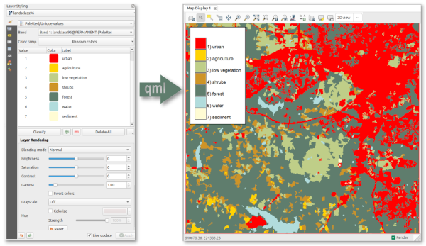

DESCRIPTION
r.colors.qml applies raster symbology defined in QGIS in a QML style
file to the same raster in GRASS. The user provides the QML style file and the
raster to which to apply the symbology (color and labels) from that file.

From QGIS through QML to GRASS color table and categories.
QML is a format for storing layer styling in QGIS, including the colors and
labels that are defined under symbology. The addon extracts the raster colors
and the raster labels and uses these to construct the color table and raster
categories in GRASS.
NOTE
Transparancy is silently ignored, as this is not supported by GRASS.
EXAMPLES
Apply both colors and labels defined in the landclass96.qml file to the raster
layer landclass96 in GRASS.
r.colors.qml map=landclass96 qml=landclass96.qml
SEE ALSO
r.category.trim
AUTHOR
Paulo van Breugel, HAS green academy, Innovative
Biomonitoring research group, Climate-robust
Landscapes research group